Basotho traditionl clothing reflects the cultural idendity ,values and heritage of Basotho people of Lesotho .It is worn during ceremonial occations like weddings,intiation,cultural dances and national events
Seanamarena
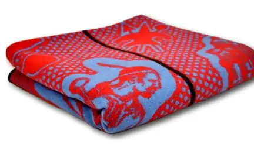
Mostly used by newly married couple
See MoreSeanamarena
used by royal family
See MoreTs'ets'e
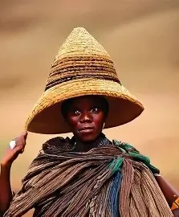
used by sherphards
See MoreTshetshe
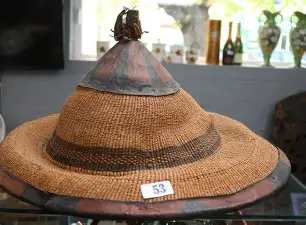
used by sherphards
See MoreMokorotlo
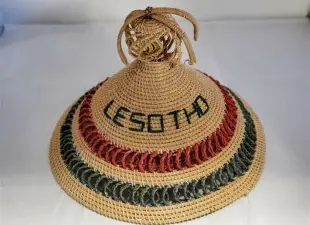
Mokorotlo is a type of straw hat widely for traditional Sotho clothing,and is the national symbol of Lesotho
See MoreMeqathatso
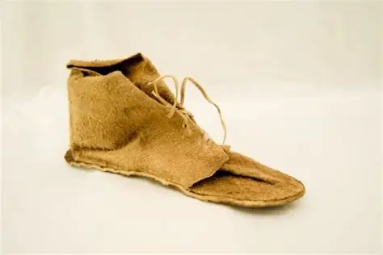
traditional shoes
See MoreThethana
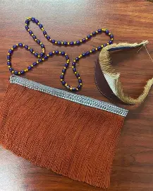
used by young women who are not married
See MoreMose oa litolobonya
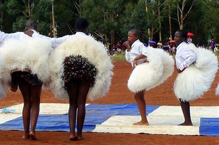
attire for perfoming litolobonya
See Moretheola moea
used to keep sherphard complection good and for wormth during winter times
See MoreMose oa khomo

traditional cloths for married women
See MoreLekoko
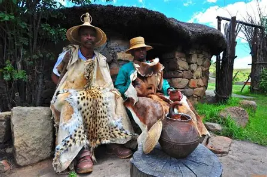
Traditional blanket for older basotho men
See MoreMose oa lingoale
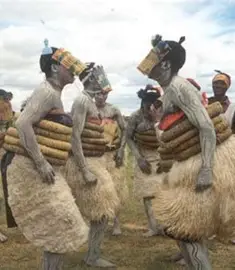
Official clothes for intiating women of our nation
See MoreKobo le seshoeshoe
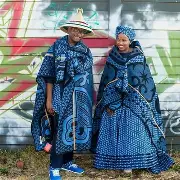
Marriage attire
See MoreTsoape
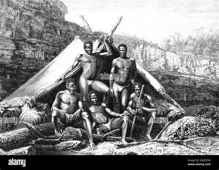
Traditional attire for men
See MoreMakoloane
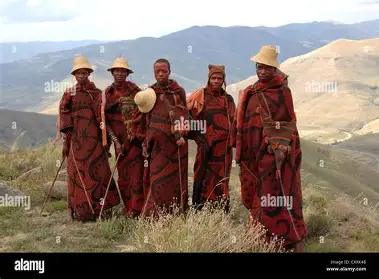
attire for initiation school for males
See Morelefitoana
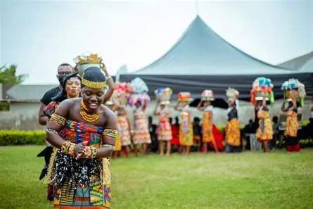
attire for dancing
See Moresome attires
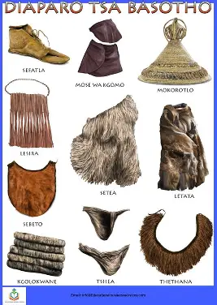
combined attires
See MoreKobo le litopo
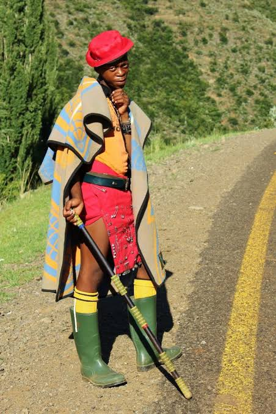
Formal attire for men after returning from initiating school
See More
Mose oa khomo
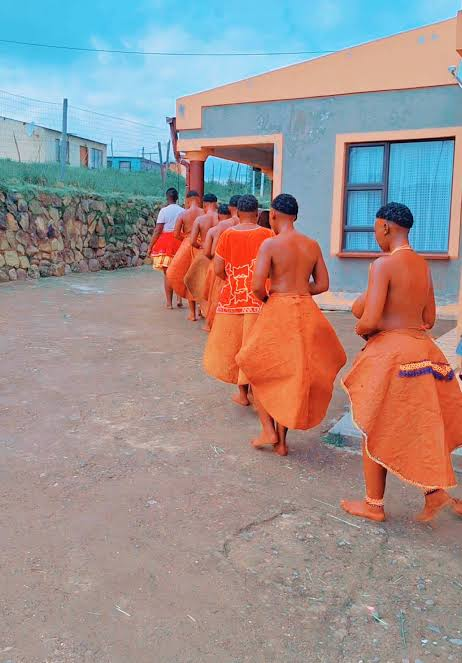
Attire for women after returng from initiation school
See More
Kuoane
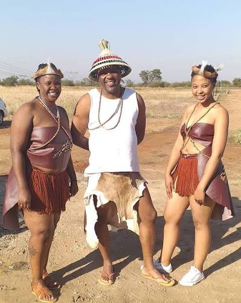
It symbolizes cultural heritage and Basotho musculinity,status and rank
See More
Sefaha

covers the breast and shows that the woman is not married yet
See More
Thethana
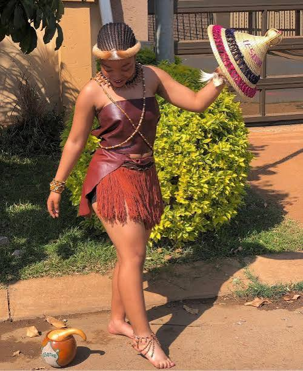
represents basotho culture
See MoreMokorotlo
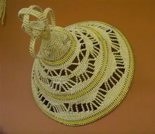
Nationa symbol of Lesotho
See MoreLikoefa
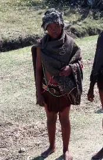
Used to keep the body warm especially
See Moreforisekoto
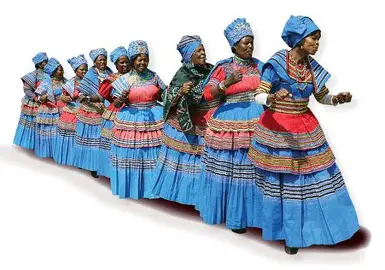
dress for older women
See Morelitolobonya
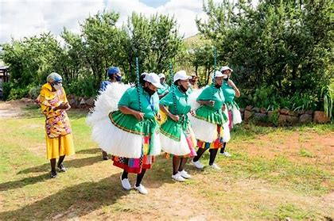
Attire used for litolobonya
See More
lerira
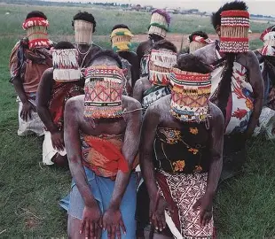
used to cover the weist or the breast
See More